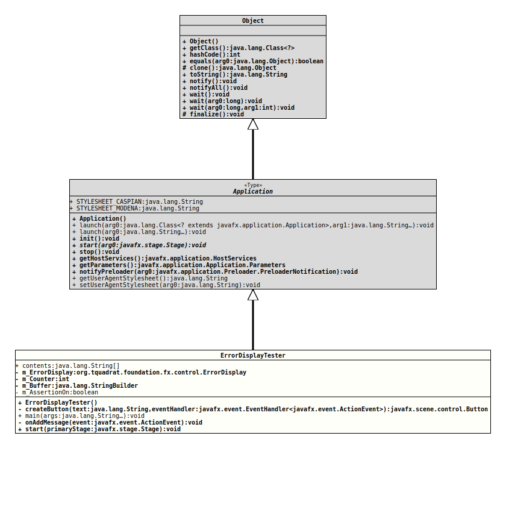

Module org.tquadrat.foundation.fx
Class ErrorDisplayTester
java.lang.Object
javafx.application.Application
org.tquadrat.foundation.fx.control.tester.ErrorDisplayTester
@ClassVersion(sourceVersion="$Id: ErrorDisplayTester.java 1113 2024-03-12 02:01:14Z tquadrat $")
@API(status=EXPERIMENTAL,
since="0.4.3")
@ProgramClass
public final class ErrorDisplayTester
extends Application
Test bed for the custom control
ErrorDisplay.- Author:
- Thomas Thrien (thomas.thrien@tquadrat.org)
- Version:
- $Id: ErrorDisplayTester.java 1113 2024-03-12 02:01:14Z tquadrat $
- Since:
- 0.4.3
- UML Diagram
-

UML Diagram for "org.tquadrat.foundation.fx.control.tester.ErrorDisplayTester"
{kind=link}
-
Nested Class Summary
Nested classes/interfaces inherited from class javafx.application.Application
Application.Parameters -
Field Summary
FieldsModifier and TypeFieldDescriptionstatic final String[]The contents for the message.private static booleanThe flag that tracks the assertion on/off status for this package.private final StringBuilderThe message.private intCounter.private ErrorDisplayThe error display.Fields inherited from class javafx.application.Application
STYLESHEET_CASPIAN, STYLESHEET_MODENA -
Constructor Summary
Constructors -
Method Summary
Modifier and TypeMethodDescriptionprivate final ButtoncreateButton(String text, EventHandler<ActionEvent> eventHandler) Creates a button and configures it.static final voidThe program entry point.private final voidonAddMessage(ActionEvent event) Responds to the AddMessage button.voidMethods inherited from class javafx.application.Application
getHostServices, getParameters, getUserAgentStylesheet, init, launch, launch, notifyPreloader, setUserAgentStylesheet, stop
-
Field Details
-
contents
The contents for the message. -
m_ErrorDisplay
The error display. -
m_Counter
Counter. -
m_Buffer
The message. -
m_AssertionOn
The flag that tracks the assertion on/off status for this package.
-
-
Constructor Details
-
ErrorDisplayTester
public ErrorDisplayTester()Creates a new instance ofErrorDisplayTester.
-
-
Method Details
-
createButton
Creates a button and configures it.- Parameters:
text- The button text.eventHandler- The event handler for the new button.- Returns:
- The new button.
-
main
The program entry point.- Parameters:
args- The command line arguments.
-
onAddMessage
Responds to the AddMessage button.- Parameters:
event- The action event.
-
start
- Specified by:
startin classApplication- Throws:
Exception
-